(Thames crews and Lifeguards only)
Spine Boards
Use of the Spine Board for a casualty who is LAYING DOWN
Extracting the casualty in a laying down position.
Safety
Ensure the straps are secure before lifting:
MAKE SURE CASUALTY CAN BREATHE.
Can be placed into the HELO stretcher if airlift required.
REMEMBER:
TALK to the casualty and explain what you’re doing.
Log roll the casualty and push the board as close to the casualty as possible, then roll the casualty onto the board, (3 person team) OR log roll the casualty, place the board in behind the casualty then lower to the floor (4 person team). Ensure the head is held at all times.
3 - Person Team
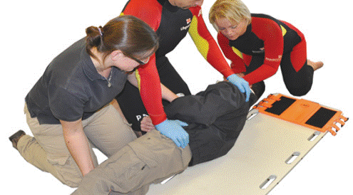
4 – Person Team
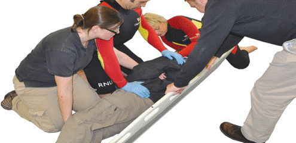
Slide the casualty diagonally so they are central on the board with the casualty’s head being centred on the headboard.
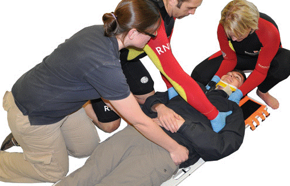
Secure the straps diagonally across the chest, keeping the casualty’s arms free. Then secure a strap across the hips and figure of 8 around the feet (photo 4). If strap is not long enough then use Velcro (photo 5).

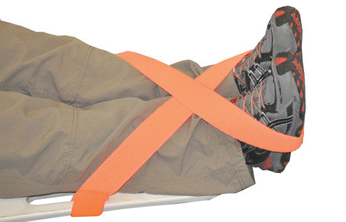
Secure the head using head blocks. Both blocks should be applied together. Ensure the head is held at all times.
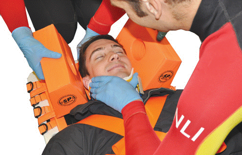
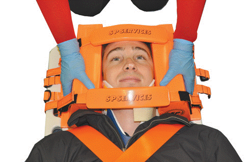
Lift the casualty holding the sides or the ends of the board. Photos show a two-man lift, and three-man lift.
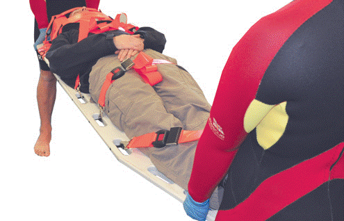
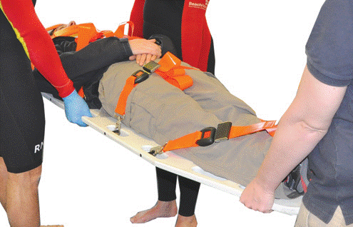
Use of the Spine Board for a casualty who is STANDING UP
Extracting the casualty in a standing up position.
Safety
Ask the patient to stand still and look straight ahead.
NEVER hold the head while the casualty is standing.
Ensure the straps are secure before lifting:
MAKE SURE CASUALTY CAN BREATHE.
Can be placed into the HELO stretcher if airlift required.
REMEMBER:
TALK to the casualty and explain what you’re doing.
Place the board behind the casualty. Both attendants should place an arm under the casualty’s armpit then grip the board. They should also place one foot behind the base of the board.
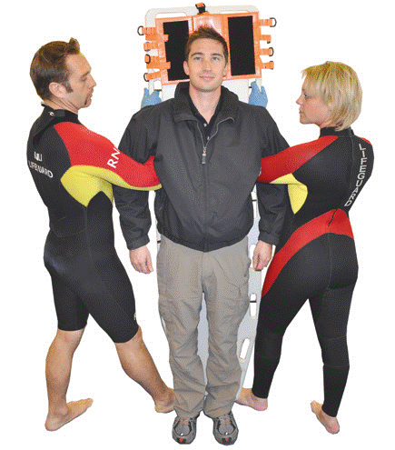
Both attendants should grip the casualty’s head with their free hand. DO NOT move the casualty’s head.
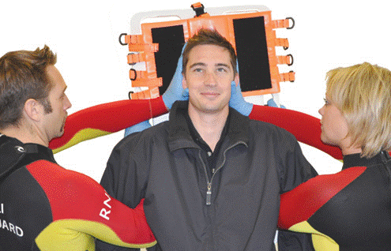
Lower the casualty to the floor by ‘walking’ or ‘lunging’.
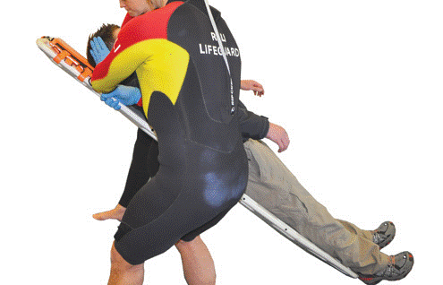
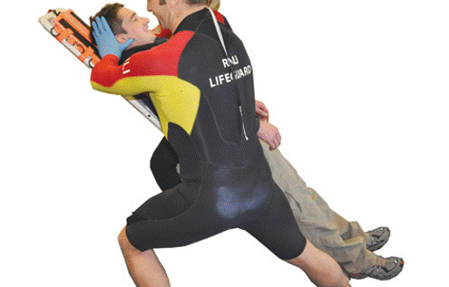
When lowered to the floor, the first attendant should slide one hand onto the back of the casualty’s head and the other onto their chin. The second attendant can then immobilise the head.
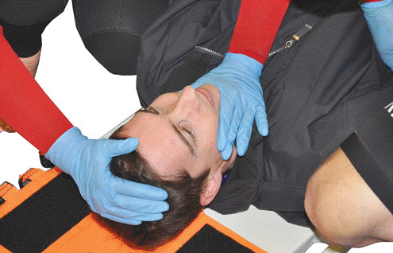
Slide the casualty so they are central on the board with their head on the headboard.
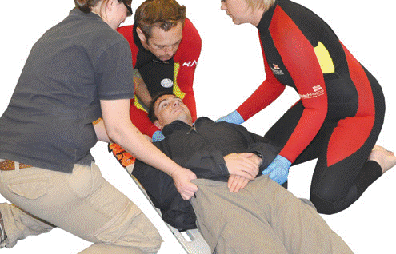
Secure the casualty to the board, lift and carry the stretcher as described earlier with the use of spinal boards.